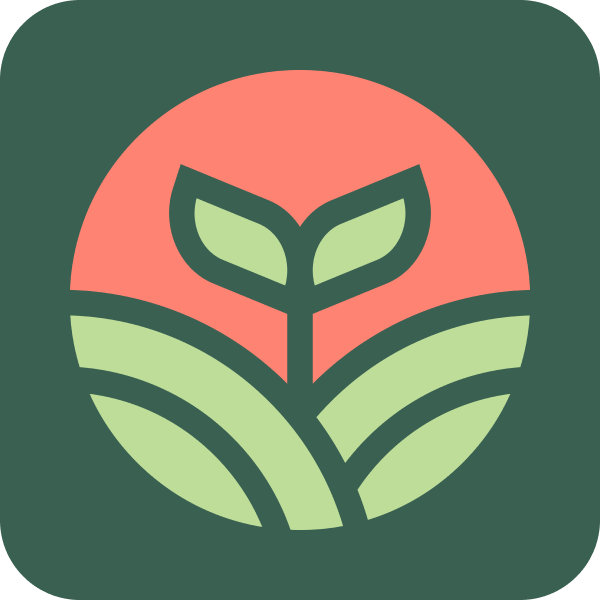

Sejarah Singkat
Badan Usaha Milik Desa Tawangsari adalah sebuah badan usaha yang didirikan Pemerintah Desa Tawangsari, Kabupaten Sleman, Yogyakarta. Proses pendiriannya sudah berjalan sejak tahun 2020, namun karena terkendala pandemi, sehingga baru resmi terbentuk pada tahun 2021. Proses pendirian Bumdes tidak terlepas dari dukungan Pemerintahan Desa Tawangsari (Pemerintah Desa, BPD, LPMD), tokoh-tokoh masyarakat, Pemerintah Kabupaten Sleman, khususnya Dinas Pemberdayaan Masyarakat serta dari Kementerian Desa, Pembangunan Daerah Tertinggal dan Transmigrasi yang dalam hal ini melalui para pendamping desa. Pada tahun 2022 Bumdes edsa Tawangsari meluncurkan sebuah website yang bernama Berdesa TWG.
Nama dan Logo
Nama BUMDes adalah Berkah Torongrejo atau disingkat Bejo (dalam Bahasa Indonesia bejo berarti beruntung), memiliki makna bahwa kami berharap kegiatan yang kami lakukan bisa menjadikan berkah dan keberuntungan khususnya bagi seluruh masyarakat Desa Torongrejo. Logo BUMDes Bejo memiliki makna, yaitu :
Berbentuk lingkaran, bermakna aliran keuangan yang berputar terus menerus, tidak terputus untuk membantu perekonomian warga.
Tanaman berwarna hijau yang tumbuh di atas tanah, berarti bahwa usaha yang dikerjakan berkaitan dengan hasil alam seperti dalam bidang pertanian, peternakan, dll.
Background warna oranye, melambangkan Bumdes Tawangsari ini yang selalu ada seperti sinar matahari yang terus bersinar.
Visi
Meningkatkan kesejahteraan masyarakat Desa Tawangsari dalam bidang perekonomian.
Misi
Menjalin kemitraan khususnya dengan masyarakat Desa Tawangsari serta memajukan usaha mitra.
Membuat usaha baru sesuai kebutuhan pasar dan potensi yang dimiliki tetapi diupayakan tidak mematikan usaha masyarakat yang sudah ada.
Menjalankan usaha dengan prinsip-prinsip pengelolaan usaha yang baik dan benar.
Menjalankan usaha untuk memperoleh keuntungan dengan tetap memperhatikan kearifan lokal, norma sosial, budaya, agama serta kelestarian lingkungan.
Anggota
Darmaji
Direktur
Yanto
Sekretaris 1
Agus
Sekretaris 2

Agus
Bendahara
Rani
Manager Unit Pangan
Anisa
Manager Unit Barang & Jasa